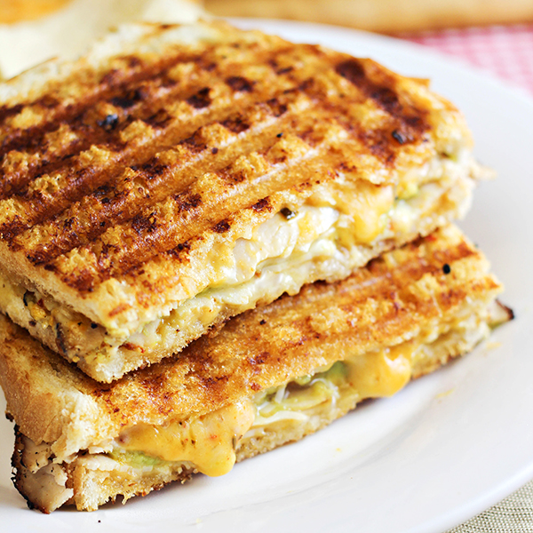

Classic Sandwich

Description
A simple sandwich that can be made in 5-10 minutes, my usual go to for a quick meal. All you need is any sort of bread, any sort of cheese, any sort of meat (ideally multiple kinds if possible), and maybe some vegetables if you're into that sort of thing. Additionally, a panini press or George Foreman grill of some sort is required.
This recipe will be the current variation I am about to make myself right now, but it can be customized any way you like.
Ingredients
- Bread
- Sliced Cheese
- Ham Slices
- Turkey Slices
Steps
- Get your bread, cut into 2 slices if necessary.
- Put 2 slices of cheese (any sort is fine, I used provolone) onto the bottom slice of bread
- Put 2 slices of ham on top of the cheese.
- Put 2 slices of turkey on top of the ham.
- Close the sandwich.
- Put the sandwich into a pre-heated panini press. Keep it in there for 3-5 minutes, until the cheese is melted and the bread is nice and brown.
- Enjoy!